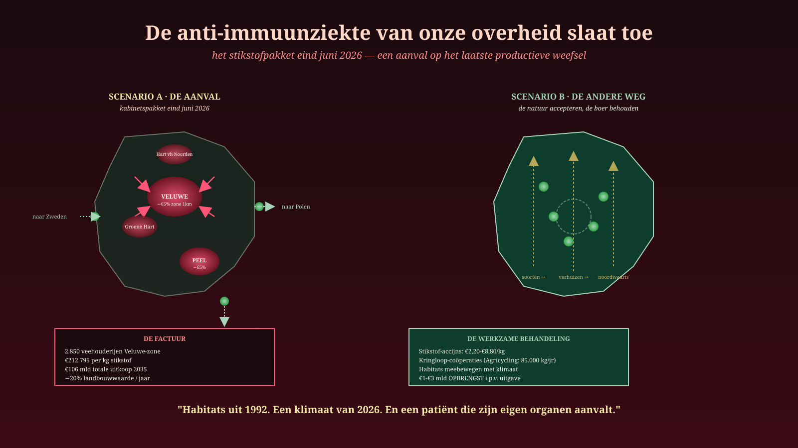
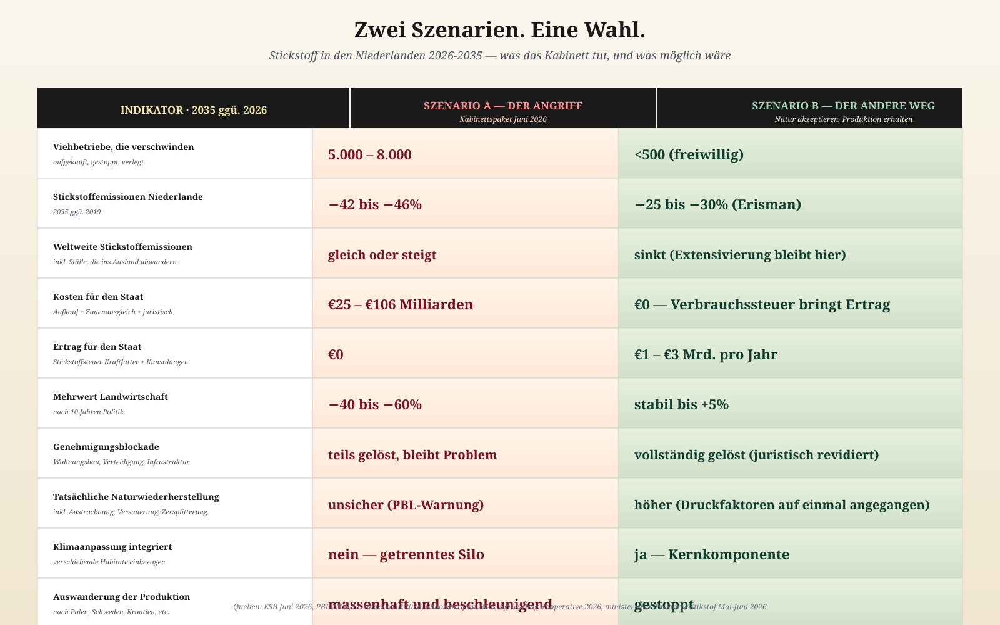

Die Autoimmunkrankheit unserer Regierung schlägt zu
Das Stickstoffpaket Ende Juni 2026 — ein Angriff auf das letzte produktive Gewebe. Und es gibt einen anderen Weg.
Jacobus van Merksteijn · 19. Juni 2026
Am Freitag, dem 26. Juni, präsentiert das Kabinett Jetten sein Stickstoffpaket. Es wird der schwerste Angriff auf den niederländischen Bauern in fünfzig Jahren sein.
Was diese Woche auf dem Tisch liegt:
Zonen von 500 bis 1.000 Metern rund um zwanzig große Natura-2000-Gebiete. Darin müssen allein rund die Veluwe 2.850+ Viehhalter verschwinden, umziehen oder innovieren. Reduktion: 65 %, Ambition: 69 %.
Quelle: WNL, 17. Juni 2026
Landesweite Reduktion 42–46 % für Land- und Gartenbau bis 2035. Industrie und Mobilität: 50 %. Betriebsspezifische Emissionsnormen, erzwungene Bodenbindung der Milchviehhaltung ab 2032, Fortsetzung des Lbv-Aufkaufs.
€212.795 pro Kilogramm Stickstoff kostet der Lbv-Aufkauf bereits jetzt. Ein Kilogramm Stickstoff im Kraftfutter kostet den Bauern €1,50. 140.000 Mal teurer als das Problem. Um die Regierungsziele 2035 per Aufkauf zu erreichen: 106 Milliarden Euro.
Quelle: ESB, 16. Juni 2026
Wertschöpfung Landwirtschaft –20 % im Jahr 2026 allein. Ställe werden abgerissen und in Polen, Schweden, Kroatien, Peru und der Ukraine neu aufgebaut. Gerade die jungen, modernen Ställe.
Quellen: Rabobank, 12. Juni 2026 · NieuwRechts, 15. Juni 2026
Das ist das Paket. Was es in der Sprache der Medizin wirklich ist:
Die Autoimmunkrankheit unserer Regierung, die wir in dieser Zeitung früher beschrieben haben, schlägt nun vollständig zu. Die Führung greift das produktive Gewebe an, auf der Grundlage von Rechenmodellen aus 2019, in einem Klima von 2026, um Habitate zu schützen, die sich selbst bereits nordwärts verschieben.
Der Wahnsinn in einer Zahl
Ein Indikator fasst die gesamte Krankheit zusammen.
€212.795. Das ist, was der Staat zahlt, um ein Kilogramm Stickstoff aus einem Natura-2000-Gebiet zu entfernen — über die Lbv-Aufkaufregelung.
Dasselbe Kilogramm im Kraftfutter kostet den Bauern €1,50.
Der gesellschaftliche Schaden dieses Kilogramms, höchste Schätzung: €8,80.
Wir geben also €212.795 aus, um €8,80 Schaden zu verhindern. Ein Verhältnis von 1 zu 24.000. Kein denkender Mensch kann eine solche Entscheidung verteidigen. Und dennoch wird die Politik fortgesetzt — und sogar ausgeweitet.
Warum? Weil das System nicht mehr denkt. Es führt aus. Der Staatsrat sagte 2019: Stickstoff muss sinken. Die Modelle sagen: so viel pro Jahr. Die Beamten sagen: also so viele Bauern weg. Niemand fragt mehr: Stimmt dieses ganze Konstrukt eigentlich noch?
Was die Natur inzwischen tut
Während wir an Zielen von 2019 rechnen, bewegt sich die Wirklichkeit.
Die Baumgrenze verschiebt sich nordwärts. Mediterrane Arten siedeln sich in Brabant an. Skandinavische Nadelwälder schrumpfen, Vögel brüten Wochen früher, Insekten verlagern ihre Verbreitung um Hunderte Kilometer pro Jahrzehnt.
Die Habitate, für die wir Bauern aufkaufen, verlassen selbst ihre Schutzgebiete.
Wir schützen Briefmarken von Vegetationstypen, für die das Klima keine Grundlage mehr bietet. Wir kämpfen für das Bestehen von Arten an Orten, an denen sie nicht mehr sein wollen. Und wir tun das, indem wir die Bauern, die sie unterstützen könnten — durch naturinklusive Landwirtschaft, Kreislauflandwirtschaft, Bodenkohlenstoff — wegkaufen.
Das ist keine Politik. Das ist eine Autoimmunreaktion auf eine Wirklichkeit, die der Organismus nicht mehr wahrnimmt.
Zwei Szenarien
Es gibt genau zwei Wege für die kommenden zehn Jahre. Der eine ist das Paket vom Freitag, dem 26. Juni. Der andere ist das, was eine gesunde Führung täte.

Zehn Indikatoren. Zwei Ergebnisse. Die Wahl liegt diese Woche auf dem Tisch.
Szenario A — Das Regierungspaket
Das System führt die Autoimmunkrankheit bis zum Ende durch.
- 5.000 bis 8.000 Viehbetriebe verschwinden
- Landwirtschaftlicher Wert schrumpft in zehn Jahren um 40 bis 60 %
- Ställe wandern massenhaft ins Ausland — dort wächst der Viehbestand
- Weltweite Stickstoffemissionen bleiben gleich oder steigen
- Staatskosten: 25 bis 106 Milliarden Euro
- Genehmigungsstillstand bleibt Problem (PBL: Stickstoff bleibt Druckfaktor)
- Natur erholt sich unzureichend — Austrocknung und Versauerung bleiben unberührt
- Klimaverschiebung wird nicht berücksichtigt
Ein Patient, der unter immer schwererer Medikation schwächer wird. Ein Land, das seine eigenen produktiven Zellen angreift, um Habitate zu schützen, die bald nicht mehr da sein werden.
Szenario B — Der andere Weg
Drei Grundsätze. Kein Angriff mehr auf das produktive Gewebe.
Erstens. Besteuern, was man reduzieren will, statt wegzujagen, was man braucht. ESB-Forschung weist den Weg: eine Stickstoffsteuer von €2,20 bis €8,80 pro Kilogramm auf Kraftfutter und Kunstdünger. Keine vollständige Enteignung von Betrieben — ein gezielter Anreiz, der den Bauern erlaubt, zwischen Extensivierung, Kreislaufwirtschaft oder Weitermachen zu wählen. Ertrag: 1 bis 3 Milliarden Euro pro Jahr. Für den Staat ein Nettoertrag statt einem Nettoposten.
Zweitens. Schluss mit Zonierung und Aufkauf. Lbv und Lbv-plus sofort beenden. Die 500- und 1.000-Meter-Zonen zurückziehen. Die Rechtsgrundlage (KDW als Rechtsnorm) durch ein Gebietsziel ersetzen, das sich mit der Klimaverschiebung mitbewegt. Das Kabinett arbeitet selbst bereits an der Ablösung von KDW durch sektorale Emissionsziele — das ist eine Öffnung, die jetzt radikal genutzt werden muss.
Drittens. Akzeptieren, dass sich Habitate verschieben. Natura 2000 stammt aus dem Jahr 1992. Die Habitatrichtlinie geht von statischen Gebieten aus. Aber Lebensräume bewegen sich mit dem Klima. Der Naturplan, den die Niederlande am 1. September 2026 bei Brüssel einreichen müssen, kann dieses neue Prinzip verankern: Schütze sich mitbewegende Lebensräume, nicht unveränderliche Briefmarken veralteter Vegetation.
Der lebende Beweis, dass es geht
In Friesland arbeitet eine Genossenschaft von Bauern unter dem Namen Agricycling. Sie verarbeiten städtische Reststoffe zu Kompost und ersetzen damit Kunstdünger.
Im Jahr 2025 verarbeiteten sie 12.600 Tonnen Reststoffe zu 11.340 Tonnen Kompost. Damit ersetzten sie 317.940 kg Kunstdünger — was 85.844 kg Stickstoff entspricht. Kein Aufkauf, keine Subvention von €212.795 pro Kilogramm. Ein funktionierender Kreislauf mit einem gesellschaftlichen Nettowert von 4,4 Millionen Euro pro Jahr.
Eine Genossenschaft. Eine Handvoll Bauern. Skalierbar auf ganz Niederland. Aber es passt nicht in das Regierungspaket — denn es setzt Bauern voraus, die bleiben, und das Paket ist auf die Idee gebaut, dass Bauern gehen müssen.
Szenario A: €212.795 pro kg weniger Stickstoff, per Aufkauf.
Szenario B: 85.000 kg Stickstoff pro Jahr ersetzt durch Kreislaufwirtschaft, mit Ertrag.
Beide funktionieren. Eines tötet den Bauern. Eines stärkt ihn.
Was die Wissenschaft längst weiß
Das Schmerzhafteste an dieser Situation: Es gibt keine wissenschaftliche Debatte mehr.
- ESB (16. Juni 2026): Aufkauf funktioniert nicht, Besteuern und Versteigern schon
- Professor Erisman (Zweite Kammer, 2026): national 25 % Reduktion reicht aus, wenn gezielt umgesetzt — nicht die 42–46 %, die das Kabinett fordert
- PBL (Nieuwe Oogst, 21. Mai 2026): Stickstoffreduktion allein führt nicht zu Naturerholt — Austrocknung und Versauerung sind ebenso große Druckfaktoren
- Agricycling Friesland: Kreislauflandwirtschaft liefert konkreten Beweis, dass es anders geht
- Wageningen UR: Pufferstreifen haben 5 bis 10 % Wirkung auf Stickstoff im Wasser, aber erst nach 1–5 Jahren — generische Politik erreicht die Ziele nicht
Alle dasselbe Signal. Und die Führung ignoriert es alles. Nicht aus böser Absicht. Weil sie das Kranke nicht erkennen kann.
Was jetzt getan werden muss
Die fünf Entscheidungen der ersten hundert Tage
- Stickstoffpaket vom 26. Juni zurückziehen. Nicht anpassen, zurückziehen. Es ist in seinem Fundament falsch.
- Lbv und Lbv-plus sofort stoppen. Den Aufkaufkreislauf abwickeln. €212.795 pro kg ist keine Politik.
- Stickstoffsteuer einführen. €2,20–€8,80 pro kg auf Kraftfutter und Kunstdünger. Ertrag für naturinklusive Transition und Kreislaufpiloten.
- KDW als Rechtsnorm abschaffen. Ersetzen durch sektorale Emissionsziele, gekoppelt an ein sich mitbewegendes Habitatkonzept.
- Naturplan vom 1. September 2026 neu schreiben. Schütze sich mitbewegende Lebensräume. Erkenne Klimaverschiebung als Gegebenes. Schluss mit Briefmarken aus dem Jahr 1992.
Das Ende der Selbsttäuschung
Das Regierungspaket vom Freitag, dem 26. Juni, wird als „ausgewogen", „wissenschaftlich fundiert" und „notwendig" präsentiert werden. Es wird von GroenLinks-PvdA, D66, VVD, CDA, NSC und weitgehend von Arbeitgeberverbänden und FNV unterstützt.
Es wird als Lösung präsentiert werden.
Es ist die Krankheit. Die Autoimmunkrankheit unserer Regierung, die nun in ihre aggressivste Phase eintritt.
Und genau in diesem Moment muss der Bürger sagen: Das nicht. Nicht mit unseren Namen. Nicht mit unseren Stimmen. Nicht mit unseren Ställen, unserem Land, unserer Zukunft.
Es liegt ein anderes Paket bereit. Es kostet nichts. Es bringt Ertrag. Es lässt den Bauern leben. Es lässt die Natur atmen. Es akzeptiert das Klima. Es fehlt nur eines: eine Führung, die denken kann.
Bis dahin liegt die Verantwortung bei uns. Beim Bauern, der nicht gehen will, beim GGF, der noch glaubt, beim KMU-Betreiber, der es kommen sieht, beim Arbeitnehmer, der es auf seinem Lohnstreifen spürt.
Wir sind die Treg-Zellen. Wir sind die gesunde Gegenkraft, die die autoimmune Zelllinie ausschalten kann — aber nur, wenn wir uns erwecken.
Der 26. Juni kommt. Das Paket kommt. Es ist Zeit, es abzulehnen. Und das andere auf den Tisch zu legen.